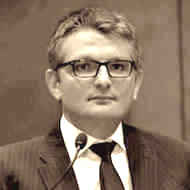
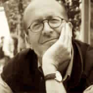

In an effort to prevent the transformation of Dalieh – the last of the natural headlands overlooking Beirut’s emblematic Sakhret el-Raouche (Pigeon’s Rock)–to another private beach resort, the “Civil Campaign to Protect the Dalieh of Raouche” is launching this Ideas Competition to solicit visions for safeguarding Dalieh as a unique natural site and a shared open space.
بهدف التصدّي للتحولات التي تطرأ على الدالية، تطلق "الحملة الأهلية للحفاظ على دالية الروشة" مسابقة الأفكار المفتوحة من أجل طرح رؤى للإحتمالات المختلفة لتنظيم الموقع. هي دعوة مفتوحة للمصممين/ات، والمخططين/ات، وعلماء البيئة، والفنانين/ات، والقانونيين/ات، وغيرهم/ن - لصوغ إطار للتدخّل، من شأنه الاستجابة لتحدّي الحفاظ على الدالية كمساحة مشتركة مفتوحة في المدينة. ويهدف الطرح الى استدراج رؤى بديلة تنتج حلولاً تصميمية مبتكرة، مراعِية للجميع، ومستدامة بيئياً.
The Competition is an open call for architects, landscape architects, urbanists, planners, and other related environmental design disciplines. Participants are invited to articulate creative, sensitive, and environmentally sustainable design proposals for the conservation and future development of Dalieh.
تُقام المسابقة تحت رعاية وزارة البيئة، كما يدعمها كلّ من معهد الأصفري للمجتمع المدني والمواطَنة، ومركز المحافظة على الطبيعة، ومعهد العصام فارس للسياسات العامة والشؤون الدولية، التابعين للجامعة الأميركية في بيروت.
Competitors’ entries will provide a platform to open a public debate about open-access shared spaces and how these spaces can be designed, managed and sustained in ways that provide viable design alternatives to current practices along the coast of Lebanon. We urge multidisciplinary professionals and/or students, particularly those concerned with the public realm and the preservation of the natural environment, to participate in the competition. Competitors’ visions are anticipated to broaden the collective understanding of the meaning of place within a highly individualized market-driven urban geography in Lebanon.
The Competition is organized under the patronage of the Ministry of Environment. Other key supporters are: The Asfari Institute for Civil Society and Citizenship and the Nature Conservation Center at the American University of Beirut (AUB).
You can download here the competition brief containing all pertinent information on the competition as well as various appendices.
To extract RAR files, please use the following applications:
Jad Chaaban is a Lebanese Economist and social activist. He is an Associate Professor of Economics at the American University of Beirut (AUB). His research and advocacy work focuses mostly on using evidence-based economics analysis to enhance the wellbeing of the most vulnerable groups in society. In 2014-2015 he served as the Lead Author of UNDP’s Arab Human Development Report 2015, a flagship publication authored by leading scholars, policymakers and opinion leaders working on the Arab countries. Chaaban holds a PhD in Economics from the Toulouse School of Economics (2004), a Master’s in Agricultural, Environmental and Natural Resources Economics (2001) from the same university, an MBA from the European School of Management (2000), and a BA in Economics from AUB (1999). He regularly writes about research and public policy issues on his personal website, and in local and international media.
Hans Kienle is Professor of landscape architecture at the University of Stuttgart and was lecturer at the University of Biberach. He is the founder and leading partner of Kienleplan GmbH since 1983. With 40 years of experience in environmental design, landscape architecture, architecture and urban planning, Kienle has successfully participated in numerous national and international competitions and served as juror in architecture and landscape architecture competitions. He has projects in Saudi Arabia, Iraq, Yemen Arab Republic, Jordan and China. He was guest lecturer at the American University of Beirut and the Academy of Art, Hangzhou. He obtained a Master degree
Marwan Ghandour is a Professor of Architecture and director of graduate degrees in Urban Design and Sustainable Environments at Iowa State University. He teaches architectural and urban design studios and multidisciplinary theory seminars. Ghandour is a partner in the Beirut-based architectural firm Bawader Architects, which is involved in institutional building and urban design in Lebanon. His research and teaching is focused on the Middle East, the American Midwest and more recently on Latin America and East Africa, where he conducts theoretical research and develops urban regeneration proposals. His research interests include multidisciplinary theory on space, and the social, spatial and legislative constitution of the built environment. Ghandour holds an MSc in Architecture and Building Design from Columbia University, and a BArch from American University of Beirut.
 Habib Debs is an architect, engineer and urban planner. He conducted for public and international institutions, in Lebanon, France and other countries in wthe Middle East and North Africa, several strategic planning processes including cities strategies, regional and local sustainable development plans, as well as urban design projects including heritage districts conservation, urban revitalization, post-war reconstruction, mix use city centers, soft mobility and public space design. His professional practice in Lebanon embraces volunteering to collaborate with civil society and local citizen groups to protect natural sites and preserve urban heritage in postwar recovery and reconstruction, notably in Beirut, Salima and Bint-Jbeil. He has taught architecture and urban planning at the American University of Beirut and Académie Libanaise des Beaux-Arts (ALBA).
Habib Debs is an architect, engineer and urban planner. He conducted for public and international institutions, in Lebanon, France and other countries in wthe Middle East and North Africa, several strategic planning processes including cities strategies, regional and local sustainable development plans, as well as urban design projects including heritage districts conservation, urban revitalization, post-war reconstruction, mix use city centers, soft mobility and public space design. His professional practice in Lebanon embraces volunteering to collaborate with civil society and local citizen groups to protect natural sites and preserve urban heritage in postwar recovery and reconstruction, notably in Beirut, Salima and Bint-Jbeil. He has taught architecture and urban planning at the American University of Beirut and Académie Libanaise des Beaux-Arts (ALBA).
 Kathryn Moore is the current president of the International Federation of Landscape Architects (IFLA) and chair of the IFLA working group to advise UNESCO and United Nations Agencies on the feasibility of an international landscape convention. Moore has contributed to the Council of Europe’s evaluation on the implementation of the European Landscape Convention. She was previously president of the Landscape Institute and 2008 and Thomas Jefferson Visiting Chair at the University of Virginia, she has published extensively on design quality, theory, education and practice.
Kathryn Moore is the current president of the International Federation of Landscape Architects (IFLA) and chair of the IFLA working group to advise UNESCO and United Nations Agencies on the feasibility of an international landscape convention. Moore has contributed to the Council of Europe’s evaluation on the implementation of the European Landscape Convention. She was previously president of the Landscape Institute and 2008 and Thomas Jefferson Visiting Chair at the University of Virginia, she has published extensively on design quality, theory, education and practice.
 Jad Tabet an architect and member of UNESCO World Heritage Committee and Vice-President of Patrimoine Sans Frontières, an NGO based in Paris. He graduated in architecture from the American University of Beirut in 1969. He is a practicing architect and urban planner between Beirut and Paris and won several awards. He is a known critic of architecture, lecturing regularly and teaches at Sciences Po-Paris School of International Affairs. He has published extensively on Beirut and served as director of the Beirut Workshop School of Architecture Paris-Belleville.
Jad Tabet an architect and member of UNESCO World Heritage Committee and Vice-President of Patrimoine Sans Frontières, an NGO based in Paris. He graduated in architecture from the American University of Beirut in 1969. He is a practicing architect and urban planner between Beirut and Paris and won several awards. He is a known critic of architecture, lecturing regularly and teaches at Sciences Po-Paris School of International Affairs. He has published extensively on Beirut and served as director of the Beirut Workshop School of Architecture Paris-Belleville.
Jala Makhzoumi studied architecture in Baghdad, completed her master in Environmental Design at Yale University, and PhD in landscape architecture at Sheffield University. She advocates an expansive, developmental landscape approach to mediate community needs with ecosystem health, biodiversity protection and landscape heritage conservation. Her professional and academic expertise includes postwar recovery, energy efficient site planning and sustainable urban greening. Makhzoumi is affiliate faculty at American University of Beirut, and founding member and senior fellow in the Cambridge Center for Landscape and People. In 2013 Makhzoumi co-established UNIT44, a Lebanon based practice in architecture, landscape architecture, ecological planning and urban design.
Nizar Saghieh is leading lawyer, legal researcher and human rights activist. His primary focus includes the independence of the judiciary in Lebanon, the penal code, memory of war, social justice, and rights of the legally marginalized. In addition to his wide legal consulting portfolio, Saghieh is the founding member of the Legal Agenda and its executive director since 2011, a platform that monitors and analyses law and public policy in Lebanon and the Arab Region.
Jury members would select a number of entries that will be part of an open touring exhibition, starting with the Beirut Design Week, and will be posted on the website. In recognition of their achievements, these shortlisted entries will be included in a publication for advocacy and will be publicly announced in a press release and during the exhibition opening event.
| Launching of Competition/Start of Registration | Tuesday, March 24, 2015 |
| Guided Site Visit (Optional)* | Saturday, April 18, 2015 |
| End of Registration | Tuesday, May 5, 2015 |
| End of Question Period: | Tuesday, April 28, 2015 |
| Reply to Questions | Tuesday, May 5, 2015 |
| Deadline for Submission of Proposals | Tuesday, May 26, 2015 |
| Jury Deliberations* | Saturday, May 30, 2015 |
| Announcement of Finalists/Press Release* | Monday, June 1, 2015 |
| Exhibition Openingas Part of Beirut Design Week* | First week of June |
| Touring Exhibition Period* | Sunday, June 7 onwards |
* The April 18th visit will be at 3pm next to the entrance of the Bay Rock café. Those wishing to attend the site visit need to register by sending an email to info@dalieh.org
الملف المفصل عن المسابقة
جاد شعبان، خبير اقتصادي لبناني وناشط اجتماعي، يعمل كأستاذ مساعد في العلوم الاقتصادية في الجامعة الأميركية في بيروت. يرتكِز في بحثه ونشاطه في المناصرة على استخدام التحليل الاقتصادي القائم على الأدلّة والبراهين، بهدف تعزيز أوضاع الفئات الاجتماعية الأكثر تهميشاً. شغل شعبان في خلال عامَي 2014 و2015 منصب الكاتب الرئيس لتقرير التنمية البشرية العربية للعام 2015، الصادر عن برنامج الأمم المتحدة الإنمائي ((UNDP. ويُعتبر التقرير أحد المنشورات الرائدة التي جمعت أعمال كبار الباحثين/ات، وصانعي/ات السياسات وقادة الرأي في الدول العربية. شعبان حاصل على درجة الدكتوراه في العلوم الاقتصادية من كلية تولوز للاقتصاد (2004)، والماجستير في اقتصاد الزراعة والبيئة والموارد الطبيعية (2001) من الجامعة ذاتها، والماجستير في إدارة الأعمال من الكلية الأوروبية للإدارة (2000)، وشهادة البكالوريوس في الاقتصاد من الجامعة الأميركية في بيروت (1999). يكتب شعبان بانتظام عن مسائل البحث والسياسات العامة على موقعه الالكتروني الشخصي، وكذلك في وسائل الاعلام المحلية والعالمية.
هانز كينلي، أستاذ في هندسة المناظر الطبيعية في جامعة شتوتغارت، وسبق أن كان محاضراً في جامعة بيبيراخ. كينلي هو المؤسس والشريك الرئيس في مؤسسة كينليبلان (Kienleplan) المحدودة منذ العام 1983. يجمع كينلي خبرة 40 عاماً في مجالات التصميم البيئي، وهندسة المناظر الطبيعية، والهندسة المعمارية والتخطيط المديني، وشارك بنجاح في عدد من المسابقات الوطنية والدولية، كما شغل منصب عضو في لجان التحكيم في مسابقات الهندسة المعمارية وهندسة المناظر الطبيعية. يعمل كينلي في مشاريع في المملكة العربية السعودية، والعراق، واليمن، والأردن والصين، وهو محاضر زائر في الجامعة الأميركية في بيروت، وفي أكاديمية الفنون في هانغتشو. كينلي حائز على درجة الماجستير في الهندسة المعمارية من جامعة شتوتغارت التقنية.
Marwan مروان غندور، أستاذ في الهندسة المعمارية ومدير برنامج الدراسات العليا في التصميم المديني والبيئات المستدامة في جامعة ولاية أيوا. يدرّس غندور مادة التصميم المديني والمعماري، ويدير حلقات دراسيّة عن النظريّة متعدّدة الاختصاصات. هو شريك في شركة "بوادر" للهندسة المعمارية في بيروت، التي تعمل في البناء المؤسّسي والتصميم المديني في لبنان. يركّز غندور في تدريسه وأبحاثه على الشرق الأوسط، والغرب الأوسط الأميركي، ومؤخراً على أميركا اللاتينية وشرق إفريقيا، حيث يجري البحوث النظرية ويطوّر مقتَرحات للتجديد المديني. تشمل اهتماماته البحثية النظرية متعددة الاختصاصات عن المساحة، والتكوين الاجتماعي والمساحي والقانوني للبيئة العمرانية. غندور حائز على درجة الماجستير في الهندسة المعمارية وتصميم المباني من جامعة كولومبيا، وشهادة البكالوريوس في الهندسة المعمارية من الجامعة الأميركية في بيروت.
حبيب دبس، مهندس معماري، مهندس ومخطّط مديني. أنجز عدداً من المخطّطات الاستراتيجية لعدّة مؤسسات عامة وعالمية في لبنان، وفرنسا وعدد من البلدان في الشرق الأوسط وشمال إفريقيا، بما فيها استراتيجيات مدينية ومخطّطات محلّية وإقليمية للتنمية المستدامة. بالاضافة الى ذلك، عمل دبس على مشاريع تصميم مديني شملت مخططات للحفاظ على المناطق التراثية، والتنشيط المديني، وإعادة الإعمار في مرحلة ما بعد الحرب، وانشاء مراكز مدينية متعدّدة الاستخدام، وتصاميم للمساحات العامّة والتنقل السّلس. وكجزء من ممارساته المهنية، يتطوّع دبس لدعم مبادرات المجتمع المدني والمجموعات الأهلية المحلية لحماية المواقع الطبيعية، والحفاظ على الإرث العمراني في مرحلة التعافي وإعادة الإعمار بعد الحرب، ولا سيما في بيروت وسليمة وبنت جبيل. سبق لدبس أن درّس الهندسة المعمارية والتخطيط المديني في الجامعة الأميركية في بيروت، وفي الأكاديمية اللبنانية للفنون الجميلة (Académie Libanaise des Beaux-Arts, ALBA).
كاثرين مور، الرئيسة الحالية للاتحاد الدولي لمهندسي/ات المناظر الطبيعية، ورئيسة فريق عمل الاتحاد المختصّ بتقديم المشورة لمنظّمة الأمم المتحدة للتربية والعلم والثقافة اليونيسكو ((UNESCO ووكالات الأمم المتحدة، بشأن جدوى الاتفاقية الدولية للمناظر الطبيعية. شاركت مور في التقييم الذي أجراه المجلس الأوروبي لتطبيق اتفاقية الاتحاد الأوروبي للمناظر الطبيعية. كذلك شغلت مور في السابق منصب رئيسة معهد المناظر الطبيعية، ومنصب رئيسة زائرة لمركز توماس جيفيرسون في جامعة فيرجينيا في العام 2008. لها عدد كبير من الكتابات عن التصميم على صعيد النوعية، والنظرية، والتعليم والممارسة.
جاد تابت، عضو في لجنة التراث العالمي التابعة لمنظمة اليونيسكو، ونائب رئيس منظّمة "تراث بلا حدود" (Patrimoine Sans Frontières) غير الحكومية في باريس. درَس تابت الهندسة المعمارية في الجامعة الأميركية في بيروت وتخرّج في العام 1969. يعمل مهندساً معمارياً ومخططاً مدينياً بين بيروت وباريس، وهو حائز على عدد من الجوائز. تابت ناقد معروف في الهندسة المعمارية، ومحاضر ومدرّس في كلية العلوم السياسية في باريس للشؤون الدولية.
درست جالا مخزومي الهندسة المعمارية في بغداد، وحصلت على درجة الماجستير في التصميم البيئي من جامعة ييل، ومن ثم درجة الدكتوراه في هندسة المناظر الطبيعية من جامعة شيفيلد. تتبنّى مخزومي مقاربة موسّعة وتنموية لهندسة المناظر الطبيعية، بهدف التوفيق بين حاجات المجتمع من جهة، وسلامة النظام البيئي وحماية التنوّع البيولوجي والحفاظ على الارث الطبيعي من جهة أخرى. تشمل خبراتها المهنية والأكاديمية مواضيع متعددة كالتعافي في مرحلة ما بعد الحرب، وترشيد استخدام الطاقة في تخطيط المواقع، والتخضير المديني المستدام. مخزومي أستاذة ملحَقة في الجامعة الأميركية في بيروت، وعضو مؤسس في مركز كامبريدج للمناظر الطبيعة والسكان. في العام 2013، ساهمت مخزومي في تأسيس UNIT44، وهي شركة مقرّها في لبنان للهندسة المعمارية، وهندسة المناظر الطبيعية، والتخطيط البيئي والتصميم المديني.
محام وعضو مؤسس للمفكرة القانونية ومديرها التنفيذي منذ 2011 والمسؤول عن تحرير المجلة التي تصدر عنها في لبنان وتونس. له كتابات وأبحاث ومقالات عدة، وخصوصا في مجال ذاكرة الحرب والقضاء وحرية التعبير والأشخاص ذوي الأوضاع الهشة. عُرف بانتهاج التقاضي الاستراتيجي في قضايا اجتماعية شائكة، أهمها قضايا التوقيف التعسفي للاجئين وذوي المفقودين في الحرب اللبنانية.
تقوم لجنة التحكيم باختيار عدد معيّن من المقترَحات لتشارِك في جولة معارض بدءاً من أسبوع بيروت للتصميم ، كما تُنشَر على الموقع الرسمي. وتقديراً لهذه الإنجازات، سيتمّ جمع المقترحات التصميمية وتنسيقها في إصدار ورقي يتمّ الإعلان عنه وتقديمه في خلال افتتاح المعرض.
| إنطلاق المسابقة/ بداية التسجيل | الثلاثاء، 24 آذار 2015 |
| الزيارة الميدانية (إختيارية) | السبت، 4 نيسان 2015 والسبت، 18 نيسان 2015 |
| نهاية التسجيل | الثلاثاء، 5 أيار 2015 |
| نهاية الفترة المخصّصة لتوجيه الأسئلة | الثلاثاء، 28 نيسان 2015 |
| الإجابة على الأسئلة | الثلاثاء، 5 أيار 2015 |
| الموعد النهائي لتقديم المقترَحات | الثلاثاء 26 أيار 2015 |
| مداولات لجنة التحكيم* | السبت، 30 أيار 2015 |
| الإعلان عن الفائزين/ مؤتمر صحافي* | الإثنين، 1 حزيران 2015 |
| افتتاح المعرض ضمن فعاليات أسبوع بيروت للتصميم | أول أسبوع من حزيران |
| انطلاق جولة المعارض | السبت، 7 حزيران 2015 |
| *سيتم تأكيد التواريخ المذكورة في مواعيد لاحقة |